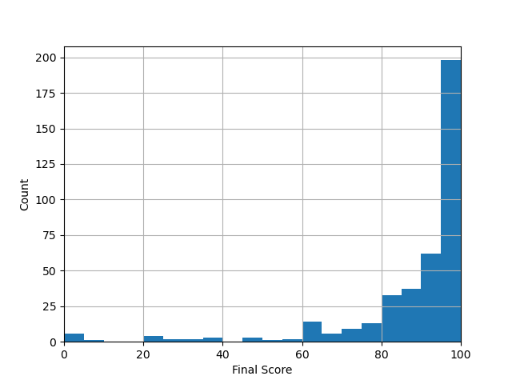

We have uploaded all test cases to ZINC and regraded your latest submissions.
On ZINC, please only check the
last report
. The other reports should be ignored.
Please check your "Final Score" (last column) HERE. It shows you the total score
minus any penalty that needs to be applied. (e.g. late submission penalty)
For detailed test case results and scores, please find the updated pa1 grading result on ZINC.
We will perform plagiarism checking at a later time and grades will be adjusted for those who are caught.
If you want to appeal your grade:
you MUST read this whole page, as well as the whole PA1 page, and follow all
procedures correctly
. Your appeal will be dropped otherwise.
If your solution produces correct output on your local machine with the skeleton code,
but failed the tests on ZINC, it is most likely that you have used "uninitialized variables" or
"defined arrays with non-constant variables as size". Your code is thus considered to be faulty.
Read this page for details. Verify
your code to make
sure
they aren't faulty and won't produce any runtime error before you appeal those cases.
Test Cases
The following table lists the test cases we use to grade your submissions. There are two sets of test
cases, i.e. the
set A and B.
Set A contains the 7 test cases we have used as examples in the task descriptions.
They are the test cases available to you on ZINC since PA1 was released.
Set B contains 40 extra test cases, and is introduced after the PA1
deadline.
In each test case we only test one task as shown under the "Task" column in the table.
You can find details of each test cases in the ZINC report. In
total, all 47 test cases are worth 100 points.
Your final score is your total score given by ZINC minus the following penalties. Check the "final_score"
column for your final socre.
Late submission: -1 point (out of a maximum 100 points) for every minute you are late. Check the
column "late_penalty" for the points deducted.
Using additional libraries (e.g., string): You will lose ALL SCORES in PA1 directly.
Check the column "use_lib"."use_lib"=1 means you are using extra libraries.
Statistics (submitted works only)
Mean: 87.98
Deviation: 19.06
Histogram: 
Trying the Test Cases
You can see all the test case results on ZINC in the latest grading report. If you want to try the test case
on your own computer, you may do the following.
Copy and paste your implementation of the tasks (along with your helper functions if you have any) to the
specified region in the code:
// Please copy and paste your implementation of the tasks under this line.// If you have defined your own helper functions please also copy and paste them here.// End of your implementation
You should not change any function headers. If you don't want to test some of the tasks, you still need to
copy the function to the tester code. Otherwise it may fail to compile.
Modify the body of the main() function in the tester code with simple function calls of the
test cases you want to test, e.g.
intmain(){test10();//run test case 10test20();//run test case 20test30();//run test case 30return0;}
Compile and run your program.
Check the output and compare that with the expected output described in the ZINC grading report.
If your solution produces correct output on your local machine with the skeleton code,
but failed the tests on ZINC, it is most likely that you have used "uninitialized variables" or
"defined arrays with non-constant variables as size". Your code is thus considered to be faulty.
Read this page for details. Verify
your code to make
sure
they aren't faulty and won't produce any runtime error before you appeal those cases.
Sample Solution
A sample solution with the skeleton code can be downloaded HERE for your
reference.
You can also download and try the sample solution with the tester code HERE.
Please understand that it is not feasible for us (or any single person) to review all the assignment code
of everyone to point out where all the subtle bugs are.
The sample solution is useful for you to find out the potential problems in your program yourself by
comparing your solution with ours.
Notes and Appeal procedure
Please carefully check your code with the test cases by following the instructions HERE, before you appeal.
Runtime errors, crashes, and inconsistent output due to incorrect memory access / memory allocation /
memory
deallocation / missing variable initialization / missing return values / out-of-bound array access / etc.
may
not occur all the time on all machines. However, even you may not encounter the error/crash when you test
your
program, if your program crashes during any of our testing on ZINC, the corresponding test cases will be
considered as failed and will receive 0 marks as your code is indeed faulty.
If your solution produces correct output on your local machine with the skeleton code,
but failed the tests on ZINC, it is most likely that you have used "uninitialized variables" or
"defined arrays with non-constant variables as size". Your code is thus considered to be faulty.
Read this page for details. Verify
your code to make
sure
they aren't faulty and won't produce any runtime error before you appeal those cases.
A common fault that may cause your solution behave differently on ZINC and your local machine is that you
may have used some variables without initializing it. Your solution works because your local machine
initialize that variable as 0 by default, while that is not the case with every platforms/machines, e.g. the
platform where ZINC runs on.
We can run the test cases again for you (after you have verified them yourself), but all grading shall be
done objectively in an automatic and consistent way on the very same machine (the ZINC grading machine,
not
any other machine including yours or ours). However, if your program crashes or gives unreliable
results, it is guaranteed that the problem is somewhere in your code, and marks will not be given. For
grading, only the result of your program on the ZINC machine matters.
It is possible that you get a lower mark as we rerun the test cases for you and found additional
crashes/mistakes. We rerun all test cases (not just the ones you want to rerun) for all appeals. So
proceed
carefully at your own risk, not just blindly appeal your grade anyway.
It is mentioned in the assignment instruction that "It is required that your submissions can be compiled
and run successfully in our online auto-grader ZINC". No matter which IDE/compiler/OS (e.g., VS Code) you
used to work out your
solution, you must verify your submission can be compiled by checking the report from ZINC.
For compilation errors, you get 0 mark. To appeal, you should find out how to fix the compilation errors
yourself, and then clearly tell us how in the email. If the fix is simple, we will help you fix it according
to your instructions then regrade it with a penalty. The fix should fix compilation errors only and must not
change the logic of your program.
Please understand that, for fairness, we usually do NOT allow any student to change their submitted code.
If you are certain that there is a grading mistake after reading this whole page, reading the
assignment description/FAQ, and reading and trying the test cases yourself, email to the TA in charge with the following information. Appeals with
incomplete
information will not be processed.
Email subject must be COMP2011 2021 Fall PA1 Appeal
Email body contains all of the following:
Your full name as shown on your student ID card
Your HKUST itsc username
Your student ID number
Test cases for which you want to appeal
Justification and any information that is helpful for your appeal case
Do not attach any .exe/executable file in the email as they will be blocked by the email server.
Appeal deadline is Oct 25th (Monday) 11:59am.
No late appeals will be processed.
Due to the large number of students that we have, please allow up to 72 hours for your appeal email to be
processed and replied. If you do not receive a reply in 72 hours, please re-send your email.
Finalized scores will only be uploaded to Canvas after all appeals are processed.